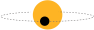
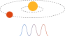

The James Webb Space Telescope, launched in 2021, got some of the first signs of life: the mix of gases in the atmospheres of Earth-sized exoplanets. Webb, or a similar spacecraft in the future, could pick up signs of an atmosphere like our own – oxygen, carbon dioxide, methane. A strong indication of possible life.
Future telescopes might even pick up signs of photosynthesis – the transformation of light into chemical energy by plants – or even gases or molecules suggesting the presence of animal life.
[image here]
This section introduces the scientific counterpart to UFO sightingsm the systematic discovery of exoplanets through rigorous methodology.
Scientific Progress
"Exoplanet discoveries exploded after 1995. Not from sightings or speculation, but from telescopes, mathematics, and scientific discoveries."
Methodology Matters
"With missions like Kepler and JWST, we've confirmed thousands of distant worlds. Each data point represents not speculation, but evidence gathered through observation and verification as well as the great advancements in technology and detection over time."
Interactive Exoplanet Explorer
Explore the diversity of discovered exoplanets by size, temperature, and discovery method.
🔬 Exoplanet Discovery Methods Explained
The thousands of known exoplanets were found using a handful of ingenious techniques, each relying on precise measurements of starlight and motion.

Transit
When a planet passes in front of its star, it causes a measurable, periodic dip in the star's light.
This method is highly effective for finding large planets close to their stars.

Radial Velocity
A planet's gravity causes its star to 'wobble.' This wobble changes the star's light spectrum (Doppler shift), which scientists use to infer the planet's mass.
Direct Imaging
This is the rare technique of directly taking a picture of an exoplanet, usually by blocking the star's overwhelming light using coronagraphs.
Microlensing
Relies on Einstein's theory of General Relativity. The gravity of a planet/star passing in front of a background star magnifies the background star's light for a short time.